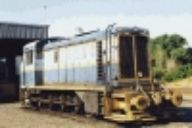
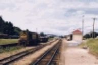
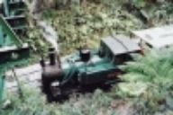
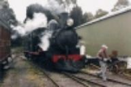

|
NAVIGATION
TOP of Page
HOME Page
TASMANIAN RAIL
About Tasman Rail
Railway Systems
RAIL SYSTEMS
Emu Bay Railway
Government Rail
Mt Lyell Railway
Tourist Railways
|
Tasmania presents its' railways in a different manner to those on the mainland. The rail
network is small by mainland standards, with only a few hundred kilometres separating the
ends of the network. Most of the operations are moderately scaled with a huge variation of
perspective within that distance - the West Coast is true pioneer country and the North Coast
track is within metres of the sea. The intervening scenery is breathtaking and the townships
the railways pass through are historic.
Tasmanian Railway Systems
Emu Bay Railway
Railway Lines
Steam Locos
Diesel Locos
Railmotors

|
Mines at Queenstown and Hellyer supplied ore concentrate for the
EBR to transport to the docks at Burnie, until closure in 1998 due to
mine depletion. The 180km of 3'6" gauge track system is now part of
Tasrail. I have travelled twice on the trains and been amazed at the
scenery and old stations.
The Emu Bay Railway was primarily concerned with the transport of
ore concentrate, from mines at Queenstown and Hellyer to docks at
Burnie, until closure in 1998. Since the mines have depleted the
railway no longer finds employ, and so remains available for tourist
trips utilising steam locos from the Don River Railway Museum.
The company used 4 or 5 locos similar to the NSW 73 class to haul
22 ore wagons over the scenic but steeply graded main line. Some of
the stations are over 100 yrs old. The E.B.R. was sold on 21/05/98 to
Australian Transport Network's Tasrail operation. The Burnie
workshops will be closed, and the unique collection of rolling stock
is to be sold off.
|
TOP
HOME
Government Rail
About Gov't Rail
Railway Lines
Steam Locos
Diesel Locos
Stations
North East Dundas

|
The Tasmanian Government Railways originally included the 2 foot
(610mm) gauge North East Dundas Tramway. It became part of
Australian National after Federal takeover, then Tasrail in the
privatised era. Modern traffic is logging, cement, coal and acid,
although now with no passenger transport.
The Government Railways consist of the 3'6"; gauge operational
main lines of the Tasmanian Government Railways/Australian
National Railways/Tasrail and the historic 2 foot gauge North East
Dundas Tramway.
The network is a freight railway concentrating on container and
logging operations using mainly high powered locomotives as bulk
carriers between the shipping ports on the North Coast and Hobart.
Note the various freight handling modes and the scenic countryside
through which the railway passes.
|
TOP
HOME
Mt Lyell Railway
Railway Lines
Steam Locos 3ft 6in
Steam Locos 2ft 0in
Diesel Locos 3ft 6in
Railmotors 3ft 6in
Railmotors 2ft

|
This famous scenic line links the mining town of Queenstown with
the port of Strahan on Macquarie Harbour.It was closed for mining
traffic in 1963 and reborn in 2000 as the Wilderness Railway. The
locos are the small Dubs 0-4-2 tank locos equipped for Abt rack
operation and a rod driven diesel.
In 1896 the Mt Lyell Railway was opened from the west coast
mining town of Queenstown to the port of Teepookana on the King
River. The line was extended in 1899 through to the Macquarie
Harbour port of Regatta Point.
The railway fell into disuse due to transport of ore over the Emu Bay
Railway, and was closed in 1963. This railway is now fully restored
and running trips along the length of the line as The Wilderness Railway.
|
TOP
HOME
Tourist Railways
Don River Museum
Tasmanian Museum
Wilderness Railway
Burnie Rail
Wee Georgie Wood
Sheffield Railway
Tullah Tramway
Ida Bay Railway
West Coast Museum
Other Restored Locos

|
With the cessation of passenger traffic in the 1980's, the ability to ride a passenger train resides with
the museums. The most interesting is the Don River at Devonport and the Hobart Tasmanian Transport Museum,
with other restored locos and trains such as Wee Georgie Wood at Tullah.
|
TOP
HOME
|